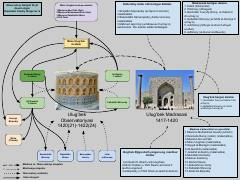

SMMirzo Ulug'bek madrasasi va observatoriyasining ilmiy faoliyati hamda olimlari haqida qisqacha ma'lumot.
Ushbu kitob Mirzo Ulug'bek madrasasi va uning qoshidagi observatoriyaning ilmiy faoliyatiga bag'ishlangan. Unda madrasada o'qitilgan asosiy fanlar, darsliklar hamda u yerda faoliyat yuritgan buyuk olimlar va ularning ilmiy merosi haqida ma'lumotlar keltirilgan.